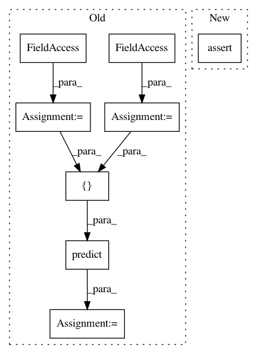

145170ca9bbd89aa01d8a40841e3c039d3683af8,tests/layer/test_graph_attention.py,Test_GAT,test_gat_node_model_no_norm,#Test_GAT#,404
Before Change
model = keras.Model(inputs=x_in, outputs=x_out)
X = gen.features
A = gen.Aadj
actual = model.predict([X, A])
expected = np.ones((G.number_of_nodes(), self.layer_sizes[-1])) * (
self.F_in * self.layer_sizes[0] * self.attn_heads
)
assert expected == pytest.approx(actual)
After Change
expected = np.ones((G.number_of_nodes(), self.layer_sizes[-1])) * (
self.F_in * self.layer_sizes[0] * self.attn_heads
)
assert np.allclose(expected, actual[0])
def test_gat_node_model_wrong_norm(self):
G = example_graph_1(feature_size=self.F_in)
gen = FullBatchNodeGenerator(G)
In pattern: SUPERPATTERN
Frequency: 3
Non-data size: 8
Instances
Project Name: stellargraph/stellargraph
Commit Name: 145170ca9bbd89aa01d8a40841e3c039d3683af8
Time: 2019-06-03
Author: andrew.docherty@data61.csiro.au
File Name: tests/layer/test_graph_attention.py
Class Name: Test_GAT
Method Name: test_gat_node_model_no_norm
Project Name: stellargraph/stellargraph
Commit Name: 145170ca9bbd89aa01d8a40841e3c039d3683af8
Time: 2019-06-03
Author: andrew.docherty@data61.csiro.au
File Name: tests/layer/test_graph_attention.py
Class Name: Test_GAT
Method Name: test_gat_node_model_l2norm
Project Name: stellargraph/stellargraph
Commit Name: 145170ca9bbd89aa01d8a40841e3c039d3683af8
Time: 2019-06-03
Author: andrew.docherty@data61.csiro.au
File Name: tests/layer/test_graph_attention.py
Class Name: Test_GAT
Method Name: test_gat_serialize